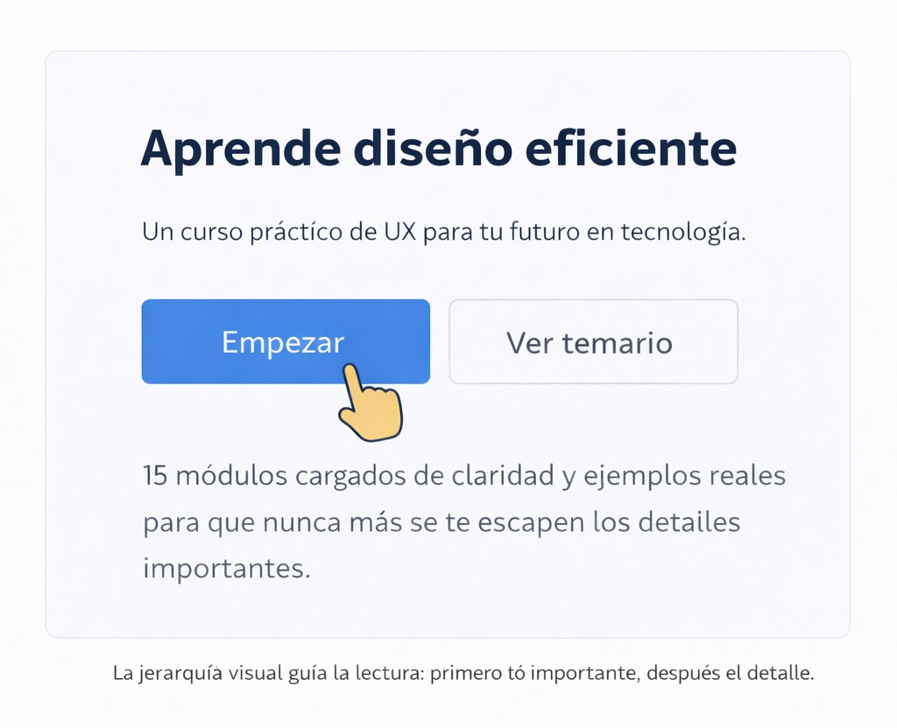
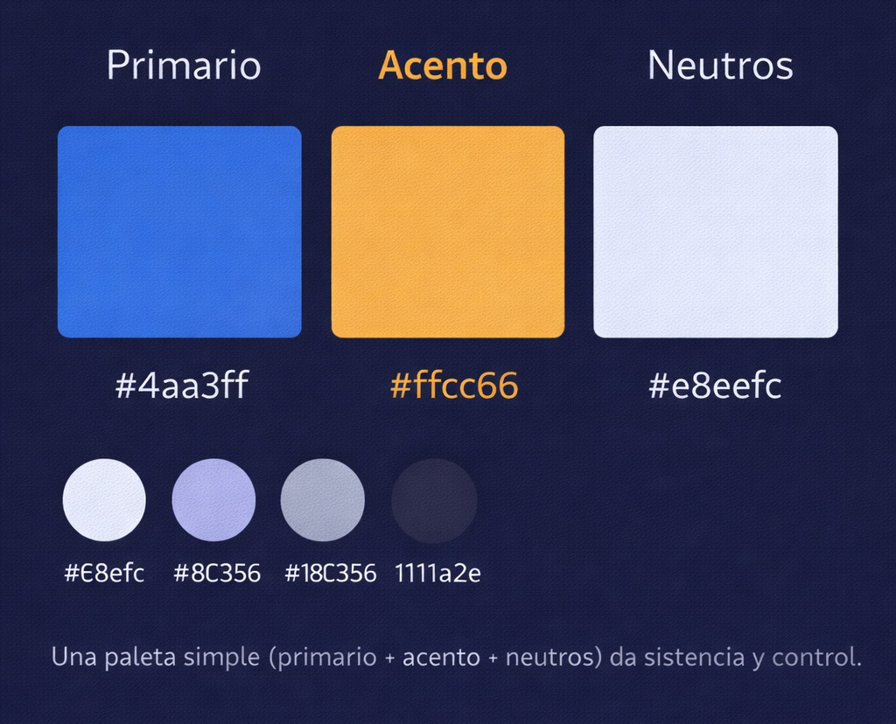

1) Conceptos clave
El diseño visual en sitios web es el conjunto de decisiones gráficas que guían la percepción del usuario: color, tipografía, composición, imágenes e iconografía. Su objetivo es que el contenido se entienda rápido, se vea consistente y apoye la intención del sitio (informar, vender, orientar o persuadir).
En una interfaz, lo visual no es “decoración”: es una forma de organizar información, crear jerarquía y reducir errores. Cuando el diseño visual es coherente, el usuario siente control y confianza.

2) Principios del diseño visual
- Jerarquía: tamaño, contraste y ubicación para priorizar información.
- Contraste: diferencia clara entre texto y fondo, y entre elementos.
- Alineación: orden y estructura; evita “ruido” y mejora la lectura.
- Repetición: consistencia en estilos (botones, títulos, espaciados).
- Proximidad: agrupar lo relacionado y separar lo diferente.
- Espacio en blanco: respiración visual para reducir carga cognitiva.
Tip práctico: si dudas, prioriza legibilidad: buen contraste, tamaños claros y espaciados consistentes.
3) Proceso recomendado para diseñar una página
- Definir objetivo y audiencia: qué necesita lograr el usuario.
- Contenido primero: títulos, texto y recursos antes de “decorar”.
- Estructura: bloques simples (header, nav, main, aside, footer).
- Sistema visual: paleta, tipografías, botones y componentes.
- Maquetación: HTML5 semántico y CSS (grid/flex) para estructura.
- Pruebas: revisar en diferentes tamaños y mejorar detalles.

4) Recurso multimedia
Este video complementa los conceptos mostrando cómo la jerarquía, la composición y el color influyen en la experiencia del usuario al navegar un sitio.